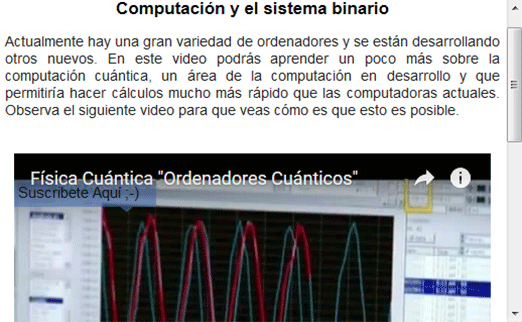

Cambio de base
Cambio de base
 Cambio de base
Cambio de base
El objetivo de esta unidad es presentar al alumno formas distintas de contar elementos dependiendo del número de símbolos con que cuente para hacerlo. A estas formas de contar se les conoce como base. El alumno observará que el caso decimal es simplemente uno de muchos, en el que se cuenta con 10 distintos símbolos. Pero existen otras bases, como la binaria, en que se cuenta con sólo dos distintos símbolos. También está la hexadecimal con 16 diferentes símbolos. El alumno aprenderá a contar con estas bases, y a transformar valores numéricos de una a otra. Adicionalmente, aprenderá por qué estas otras bases resultan útiles.
Consiste en dos textos en que se presentan ejemplos que muestran por qué la base binaria es importante, especialmente en el área de la computación. También se menciona la utilidad de contar con bases con muchos símbolos como una forma de resumir información.

Consiste en cuatro partes. La primera aborda la razón por la cual la base binaria es importante, que es que representa situaciones en que sólo hay dos posibles estados. Como ejemplo se presentan los circuitos (prendido o apagado) y las neuronas (que pueden descargar o no). También hace mención sobre bases con más símbolos que la decimal; en particular, la hexadecimal. La segunda parte consiste en un interactivo en que se hace una comparación de cómo se cuentan elementos en la base binaria respecto a la base decimal. Aquí se enfatiza el papel que juega el tener un número limitado de símbolos, y cómo es necesario incluir más dígitos cuando se agotan todas las combinaciones de los mismos. La tercera parte es semejante a la segunda pero para la base hexadecimal. La cuarta parte incluye un resumen de los puntos claves que se obtienen de visitar las partes 2 y 3, dando así paso al desarrollo.
Consiste en 4 partes que se abocan a la conversión de valores entre bases, con lo que el alumno practica los conceptos principales de las mismas.
La primera es un ejercicio retroalimentado en que el alumno debe seguir ciertos pasos para convertir un número de base binaria a decimal.
La segunda consiste en un ejercicio retroalimentado con dos interactivos que involucran la conversión de un valor de base decimal a binaria. El primer interactivo muestra un método de tanteo de potencias para ir cubriendo el número decimal. El segundo muestra el algoritmo conocido para directamente realizar la conversión, pero echando mano de su retroalimentación como de lo aprendido en el primer interactivo, queda más claro.
La tercera es un ejercicio similar al de la primera parte, pero para convertir valores en base hexadecimal a decimal.
La cuarta es un ejercicio similar al de la segunda parte pero para convertir valores en base decimal a hexadecimal.


Consiste en un texto en el que se pone de manifiesto de forma más precisa la utilidad de la base binaria y la hexadecimal. Adicionalmente se hace nuevamente la relación al fenómeno de poder concebir bases más grandes a la binaria tanto en computadoras como en nuestro cerebro, a pesar de que el funcionamiento de elementos individuales en los mismos es primordialmente binario.
| Diseño del contenido | Alejandro Radillo Díaz, LITE |
| Diseño funcional | Alejandro Radillo Díaz, LITE |
| Programación | Alejandro Radillo Díaz, LITE |
| Asesoría de programación |
Oscar Escamilla González |
| Ilustración | Nombres y Apellidos (,Adscripción opcional) |
| Diseño gráfico | Nombres y Apellidos (,Adscripción opcional) |
| Coordinación | Leticia Montserrat Vargas Rocha |
| Desarrollo del contenedor | Oscar Escamilla González |
Los contenidos de esta unidad didáctica interactiva están bajo una licencia Creative Commons Reconocimiento-NoComercial-CompartirIgual.
La unidad didáctica fue creada con Arquímedes, una herramienta de código abierto.
La unidad didáctica contiene escenas elaboradas con Descartes, una herramienta de código abierto.
LITE - UnADM 2014